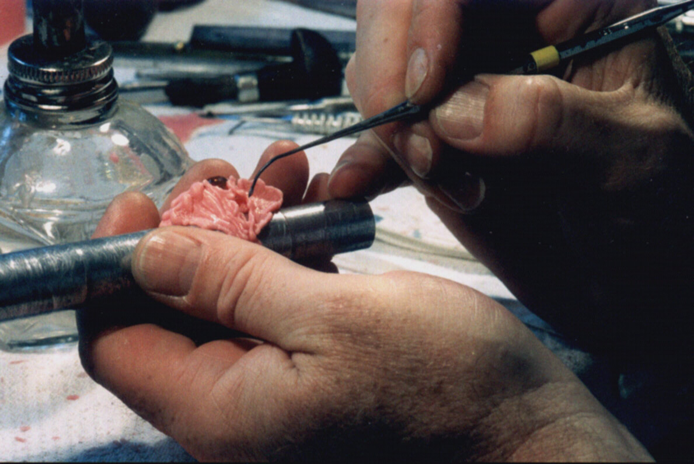
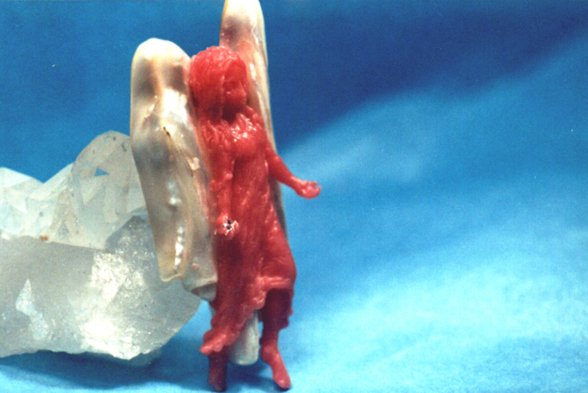
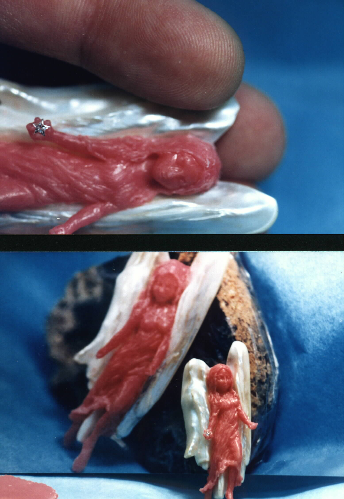
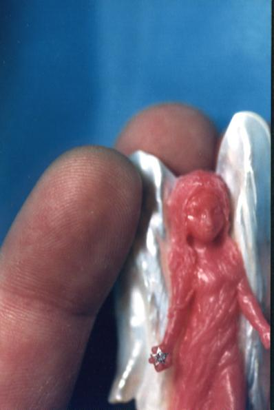

- home - Art - Designs by Elias - Wax Models Page Two -
~
Wax Models Page One
~
I began to use wax build-up techniques in the 1960s when I was a Dental laboratory technician. I was trained to make gold crowns and bridges for Dentists, a process which begins with accurate stone model-making from impressions taken in the mouth by the Dentist. Pouring velmix or cast-stone exact models of the patient's prepped tooth enables the lab technician to duplicate the prepped tooth from impressions provided by the Dentist and allows a subsequent wax modeling technique to create the proper model for the restoration of the patient's tooth as a gold crown. The wax carving creates the model which is then cast into gold and finally finished with metal-working techniques to provide the Dentist a suitable crown to mount in the patient's mouth. A bacteria-free seal is necessary in the fit of the new crown onto the patient's prepared restoration, so a highly-technical procedure is required. However, for me, after working as a crown-and-bridge technician for some time, I realized that there are only so many ways one may make a molar in gold, and that while each case requires its own individual application of the basic technique, there is little room in the work for personal creativity in arriving at the finished crown. Excellence, yes; creativity, no. Eventually, by the mid-1970s, I became interested in merging dental wax model techniques with the infinite possibilities of jewelry design. The wax tool pictured below is a Peter K. Thomas wax placer which was given to me by Dr. William H. McHorris, who wrote the crown and bridge manual for the Dentistry Department of the University of Tennessee. This tool is used in a "build-up" technique. The tip of the tool is heated or warmed to desired temperature over (in my system) an alcohol-burning wick lamp. When hot enough, the tool is touched to the wax supply and in doing so it heats a globule of melted wax which will adhere to the hot tip of the tool. While that globule of molten wax adheres to the wax placer's tip, the tip is quickly moved to one's wax model, where it is added by touch to the existing bulk of the design. The design is literally built "one drop of wax at a time".

A variety of additional tools are used in working the wax model, including wax files, high-speed rotary burs, scrapers and carvers, and whichever tools one makes from one's preferences. As one adds the tiny droplets of wax to the growing or developing model, one attempts to direct the development of one's design by choices made with the application of each new droplet of wax. When waxing a design for a stone or a group of stones, one lubricates the stone and applies wax directly onto the chosen areas of the stone to create a future seat for the stone once the wax has been cast into metal. The accuracy of one's casting technique duplicates exactly one's wax model in every detail.
~
I do not have photographs of the following design after it had been completed in 18 karat yellow gold. I may get a chance to take photos in coming times, and if I do I'll post them up here. We'll look at the wax forms which frame a very lively Arizona Fire Agate.
The gentleman wanted an eagle, so I envisioned an eagle flying into a fiery sunrise. The dark area adjacent to the inside of the wings is the Arizona Fire Agate, which did not show well in this photo. I've included the photo to show how the design was created on a graduated aluminum wax mandrel, and also to show how I laid out the diamonds on this side of the finger-ring.
~
I had been with the gentleman when he bought this Arizona Fire Agate. It was quite respectably priced, (Several thousand dollars) and deserved to be so. It is a specimen of finest quality and surprising beauty. The gem is quite large. It was irresistible and glorious. My client initially balked at the price. He slept on the notion over-night. We returned the following day to the dealer who had this stone, and as the gentleman bought the stone I was asked, and I consented, to create a finger ring for the stone.

~
The diamonds on the shoulders of the design were mixed white and brown round-brilliant-cut diamonds. I used dream-like forms and textures opposite the eagle to accent and balance the work. The wax shown in these photographs is mounted on the lubricated, graduated (stepped) aluminum wax mandrel. Apologies for not softening its glare....

~
Next we'll see something which should require some explaining. Immediately behind the wax carving stands an oddity of great value. It is a double baroque pearl standing about (speaking from a faulty memory here) two and one-half inches tall as pictured here. The pearl may actually be said to be, in one view on it, two pearls which grew together. Both being baroque, they were conjoined along their slender edges in a way which caused the owner of the pearl to imagine "angel wings". Immediately behind the standing pearl is my prop, the quartz-crystal cluster. So we're looking at a crystal cluster holding up a standing baroque pearl onto which I had waxed a version of an "angel"

~
Held in my fingers for perspective, the top picture shows her size relative to my fingertips. The second picture in this collage shows the completed wax model affixed to the pearl just as the gold casting of this design would be, with an enlarged photograph included to show a different angle of view.

~
One more "finger-tip" view of this wax model.

This little lady was cast in 18 Karat yellow gold. The roll of film on which I shot pictures of the finished piece was ruined, so I do not have finished photos to show. In her right hand is a five-pointed star-cut diamond from Crown Diamond Co. in Atlanta, Georgia, graded "E-VS". The diamond was mounted with a platinum finding and soldered to her hand. Over her head, the finished piece featured a round "halo" of platinum in which was set a row of very tiny Princess-cut fine diamonds. This piece is a combination of brooch, pendant, and a pearl enhancer. My signature plate is on the backside, where the functional findings are hidden. This piece resides on a strand of 15 mm South Seas pearls. This piece, as is the case with all items photographed on these pages, resides in a Private collection.
- home - Art - Designs by Elias Alias - Wax Models Page Two -
~